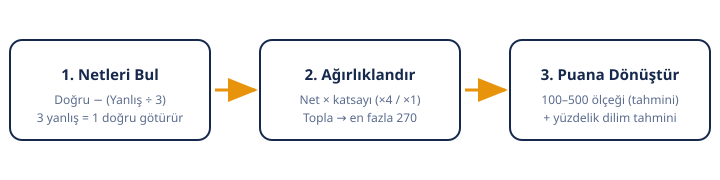

LGS Puan Hesaplama Aracı
Her ders için doğru ve yanlış sayılarını yaz. Boş bıraktıkların otomatik hesaplanır, sonuçlar anında güncellenir.
| Ders | Doğru | Yanlış | Boş | Net |
|---|
Nasıl Kullanılır?
- Doğru ve yanlışlarını gir: Deneme sınavındaki veya tahmini doğru-yanlış sayılarını her dersin satırına yaz. Boş bıraktığın sorular otomatik hesaplanır.
- Hesapla'ya bas: Yazdıkça sonuçlar otomatik güncellenir; dilersen butonu da kullanabilirsin.
- Sonucunu yorumla: Netini, tahmini puanını ve tahmini yüzdelik dilimini gör. Sonucu kopyalayabilir veya WhatsApp ile paylaşabilirsin.
Sonuçların Ne Anlama Geliyor?
- Net: Her derste Doğru − (Yanlış ÷ 3) formülüyle bulunan değerlerin toplamı. LGS'de 3 yanlış, 1 doğruyu götürür.
- Tahmini Puan (100–500): Netlerinin ders katsayılarıyla ağırlıklandırılıp 100–500 ölçeğine dönüştürülmüş hali. MEB'in gerçek hesaplaması sınav sonrası ulusal verilerle yapılır; bu yüzden sonuç "tahmini"dir.
- Tahmini Yüzdelik Dilim: Tahmini puanının, geçmiş yılların puan–dilim tablolarına göre karşılık geldiği sıralama aralığı. Tercih döneminde asıl bakılan ölçüt dilimdir, ham puan değil.
- Kaba Hedef: Puanının kabaca hangi okul türlerine denk geldiğine dair yol gösterici bir aralık. İl ve okula göre taban puanlar değişir.
Puan Nasıl Hesaplanıyor? (Formül ve Yöntem)

Adım 1 — Netleri bul
Her ders için: Net = Doğru Sayısı − (Yanlış Sayısı ÷ 3). Boş bırakılan sorular neti etkilemez. Not: Bazı siteler yanlışların götürmediğini yazıyor; bu bilgi yanlıştır. MEB LGS Kılavuzu'nda ham puanın "doğru sayısından yanlış sayısının üçte birinin çıkarılmasıyla" bulunduğu açıkça yazar.
Adım 2 — Katsayılarla ağırlıklandır
Her dersin neti, MEB'in belirlediği katsayıyla çarpılır ve toplanır. En yüksek ağırlıklı toplam 270'tir:
Ağırlıklı Toplam = (Türkçe + Matematik + Fen) × 4 + (İnkılap + Din + Yabancı Dil) × 1
Adım 3 — 100–500 ölçeğine dönüştür (tahmini)
MEB, ağırlıklı toplamı o yılın Türkiye geneli ortalaması ve standart sapmasını kullanarak 100–500 aralığına ölçekler. Bu ulusal veriler sınavdan önce bilinemez. Bu araç, geçmiş yıl net–puan tablolarıyla uyumlu şu şeffaf yaklaşımı kullanır:
Tahmini Puan ≈ 100 + 400 × (Ağırlıklı Toplam ÷ 270)
Adım 4 — Yüzdelik dilimi tahmin et
Tahmini puan, geçmiş yılların puan–dilim tablolarındaki karşılıklarına göre bir dilim aralığına dönüştürülür.
Çalışılmış Örnek
Bir öğrencinin deneme sonuçları: Türkçe 16 doğru 2 yanlış, Matematik 14 doğru 4 yanlış, Fen Bilimleri 15 doğru 3 yanlış, İnkılap Tarihi 8 doğru 1 yanlış, Din Kültürü 7 doğru 2 yanlış, İngilizce 9 doğru 1 yanlış.
- Netler: Türkçe 15,33 — Matematik 12,67 — Fen 14,00 — İnkılap 7,67 — Din 6,33 — İngilizce 8,67. Toplam net: 64,67
- Ağırlıklı toplam: (15,33 + 12,67 + 14,00) × 4 + (7,67 + 6,33 + 8,67) = 190,67
- Tahmini puan: 100 + 400 × (190,67 ÷ 270) ≈ 382
- Tahmini yüzdelik dilim: ≈ %12–15 → kaba hedef: Anadolu Lisesi (üst düzey)
Bu örneği yukarıdaki araca girerek aynı sonucu aldığını doğrulayabilirsin.
Ders Katsayıları
| Ders | Soru Sayısı | Katsayı |
|---|---|---|
| Türkçe | 20 | 4 |
| Matematik | 20 | 4 |
| Fen Bilimleri | 20 | 4 |
| T.C. İnkılap Tarihi ve Atatürkçülük | 10 | 1 |
| Din Kültürü ve Ahlak Bilgisi | 10 | 1 |
| Yabancı Dil (İngilizce) | 10 | 1 |
Tablo şunu söylüyor: Türkçe, Matematik veya Fen'deki 1 net, diğer derslerdeki 4 net ile aynı ağırlığa sahip. Çalışma planını buna göre kur.
Sonucu Etkileyen Faktörler
- Netlerin dağılımı: Aynı toplam net, katsayısı yüksek derslerde yoğunlaşırsa puan yükselir. 60 netin tamamı Matematik–Fen–Türkçe'deyse, sözel derslere dağılmış 60 netten daha yüksek puan getirir.
- Yanlışların maliyeti: Emin olmadığın sorularda rastgele işaretleme yapmak beklenen netini düşürür (aşağıdaki SSS'ye bak).
- Sınavın zorluğu: Gerçek puanda standart sapma devreye girer; zor bir sınavda aynı net daha yüksek puana denk gelebilir. Bu etkiyi bu araç tahmin edemez — bir sınırlama olarak aşağıda açıklıyoruz.
Bu Aracın Sınırları (Dürüstlük Bölümü)
- Tahmini sonuç: Gerçek ve resmi puanın yalnızca MEB'in e-Okul sonuç ekranında açıklanır. Bu araç, resmi formülün mantığını ve geçmiş yıl verilerini kullanan şeffaf bir tahmindir.
- Standart sapma bilinmiyor: MEB'in gerçek hesaplamasındaki ulusal ortalama ve standart sapma, sınavdan önce kimse tarafından bilinemez.
- Katsayılar değişebilir: MEB her yıl kılavuzda katsayıları teyit eder. Değişiklik olursa bu sayfa güncellenir.
- Dilim tahmini geçmişe dayanır: Yüzdelik dilim tahmini, önceki yılların yerleştirme verilerinden türetilmiştir; o yılın gerçek dağılımı farklı olabilir.
Sıkça Sorulan Sorular
LGS puanı nasıl hesaplanır?
Üç adımda: (1) Her dersin neti bulunur: Net = Doğru − (Yanlış ÷ 3). (2) Netler katsayılarla çarpılıp toplanır (Türkçe, Matematik, Fen ×4; diğerleri ×1). (3) MEB bu toplamı Türkiye geneli ortalama ve standart sapmayla 100–500 ölçeğine dönüştürür.
LGS'de 3 yanlış 1 doğruyu götürür mü?
Evet. MEB LGS Kılavuzu'na göre ham puan, doğru sayısından yanlış sayısının üçte birinin çıkarılmasıyla bulunur. İnternette "yanlışlar götürmez" yazan sayfalar hatalıdır.
Boş bıraksam mı, tahmin etsem mi?
Boş bırakmak neti etkilemez; yanlış ise 1/3 net götürür. Tamamen rastgele işaretlemenin beklenen değeri negatiftir (5 şıkta: 0,2 − 0,8÷3 ≈ −0,07 net). Ancak en az 2 şıkkı eleyebiliyorsan tahmin etmek istatistiksel olarak lehinedir.
Hangi derslere öncelik vermeliyim?
Türkçe, Matematik ve Fen Bilimleri'ne. Katsayıları 4 olduğu için bu üç dersteki 1 net, diğer derslerdeki 4 nete eşdeğerdir. Sözel dersleri ihmal etme, ama ağırlığı yüksek derslerdeki her net puanı belirgin şekilde artırır.
Bu hesaplama ne kadar doğru?
Formül mantığı MEB'in resmi yöntemiyle aynıdır, ancak gerçek puan ulusal istatistiklere bağlı olduğu için sonuç tahmini niteliktedir. Geçmiş yıl net–puan tablolarıyla tutarlı olacak şekilde kalibre edilmiştir; yine de resmi sonuç yerine geçmez.
Yüzdelik dilim nedir, neden puandan daha önemli?
Yüzdelik dilim, sınava giren öğrenciler arasındaki sıralamanı gösterir (ör. %5'lik dilim, ilk %5'te olduğun anlamına gelir). Puanlar sınavın zorluğuna göre yıldan yıla değişir; dilim ise daha istikrarlıdır ve lise tercihlerinde asıl bakılan ölçüttür.
Okul başarı puanı (OBP) LGS puanına eklenir mi?
Hayır. Merkezi sınavla öğrenci alan okullara yerleştirmede OBP puana eklenmez. Yalnızca iki adayın puanı eşitse sıralamada ve yerel yerleştirmede dikkate alınır.
400 puan için kaç net gerekir?
Dağılıma göre değişmekle birlikte yaklaşık 65–70 net gerekir. Netlerin katsayısı yüksek derslerde yoğunlaşması, aynı toplam netle daha yüksek puan anlamına gelir.
Girdiğim veriler bir yere gönderiliyor mu?
Hayır. Tüm hesaplama tarayıcında yapılır; doğru–yanlış sayıların hiçbir sunucuya gönderilmez, saklanmaz veya üçüncü kişilerle paylaşılmaz.
2027 LGS ne zaman yapılacak?
Kesin tarih MEB'in yayımlayacağı 2027 LGS Kılavuzu ile belli olur. Kılavuz yayımlandığında bu sayfadaki tarih ve katsayı bilgileri güncellenecektir.
Sonraki Adımlar
Puanını öğrendikten sonra sırada tercih planlaması var:
- LGS Tercih Robotu — puanına ve dilimine göre girebileceğin liseleri listele
- 81 İlin LGS Taban Puanları — okul bazında taban puan, yüzdelik dilim ve kontenjan tabloları